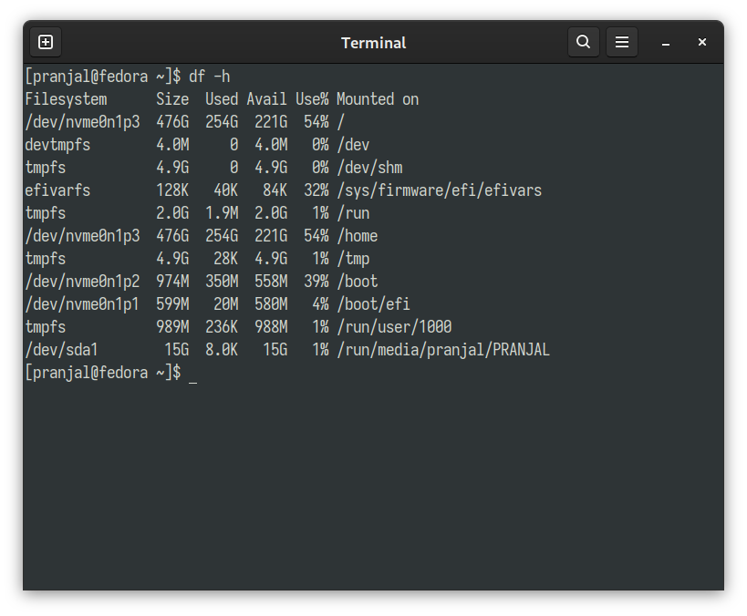
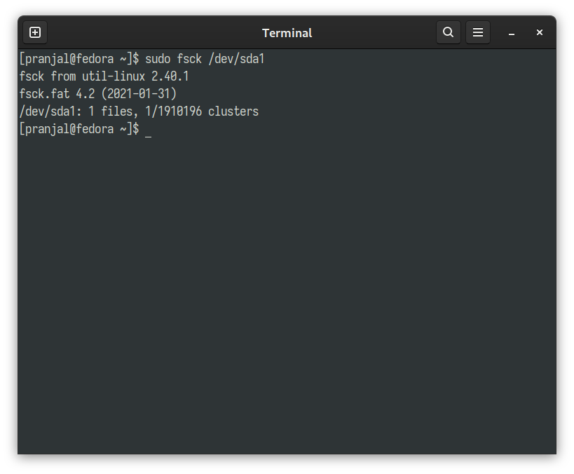

Formatting an USB-stick is a pretty easy task to do, it can be done in multiple ways, like using File managers, GUI disk utility applications like Disks, GParted etc. It can also be done fairly easily from terminal and this blog will show you how to.
Which File System You Are Going To Use
The file systems you can use for formatting a USB drive differ by maximum file size and operating system compatibility. The most commonly used file systems when formatting a USB drive are
- FAT32
- NTFS
- exFAT
As FAT32 offers the most compatibility, we will format our drive with FAT32 File System.
Formatting an USB drive will erase all the data stored in it, please backup all the important data before formatting.
Formatting the Drive
Formatting the USB Drive is a fairly easy process to do from the terminal, it consists 3 steps -
- Locate the drive
- Format the drive
- Verify the formatting process
Step 1: Locate The USB Drive
To locate the drive we wille be using a terminal utlity called df, it lists all mounted partitions in your computer. And to get more of a human readable output, execute the following command in your terminal
df -h
Indentify the USB Drive from the list and find the corresponding device. In this case it is listed as /dev/sda1

If you are not sure about which is your USB Drive, you can just unplug and replug the USB device and find out out which device is listed after plugging in the USB.
Step 2: Unmount and Format the Device
Before formatting the drive we need to unmount it, it can be done by the command
sudo umount /dev/{your_device_name}
Where you need to replace {your_device_name} by the device name you found from the Step 1.
To format the drive to our desired File System we can execute either of the following commamds
FAT32
sudo mkfs.vfat /dev/{your_device_name} -n {NAME}
NTFS
sudo mkfs.ntfs /dev/{your_device_name} -n {NAME}
exFAT
sudo mkfs.exfat /dev/{your_device_name} -n {NAME}
Where you need to replace {your_device_name} by the device name you found from the Step 1 and you can name the drive by replacing {NAME} with any name you like or you can just opt out the -n {NAME} part from the commands.
In this exmaple we are formatting our drive in FAT32 file system, which is done by
sudo mkfs.vfat /dev/sda1 -n PRANJAL
Step 3: Verify The Formatting
You can verify the formatting process with the following command
sudo fsck /dev/{your_device_name}
From the ouptut of the command we will know that

It is indeed formatted in FAT (32 bit) file system, and with only 1 file, which is used to store the name of the drive that we have given.
Conclusion
In this article it shown how to format an USB drive to an specified file system from the terminal, follow the steps in the blog to simplify the process.